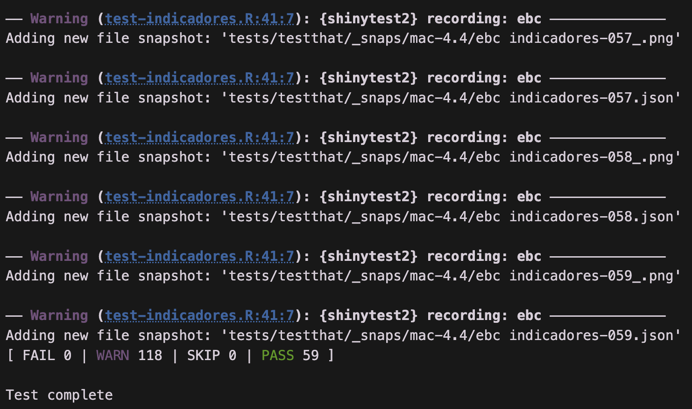
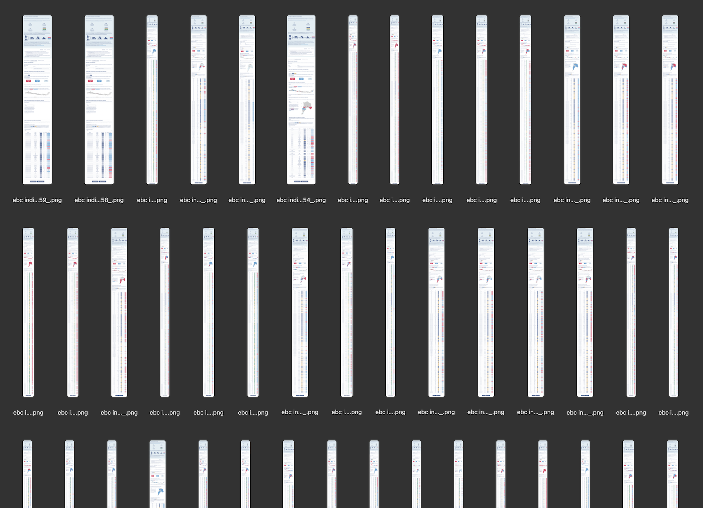

Testeo automatizado de aplicaciones Shiny con {shinytest2}
23/1/2026
Índice
Al igual que la validación de datos, validar aplicaciones Shiny te permite crear un conjunto de pruebas para confirmar que tus aplicaciones funcionan bien sin tener que probarlas manualmente. En la práctica, significa programar un bot que apriete todos los botones de tu aplicación y obtenga capturas de pantalla que te confirmen que todo se ve bien, o realizar otros tipos de pruebas más complejas.
En esta guía aprenderás a utilizar {shinytest2} para automatizar el testeo de tus aplicaciones Shiny, asegurando su correcto funcionamiento a través de capturas de pantalla y otras validaciones automáticas.
Primero que nada, instalamos el paquete:
install.packages("shinytest2")
Empezar a usar {shinytest2}
Lo primero es crear la infraestructura necesaria, ejecutando use_shinytest2() en la carpeta de tu aplicación (donde están los archivos app.R o server.R y ui.R):
shinytest2::use_shinytest2()
Si tu app está en otra carpeta ed tu proyecto, puedes especificar la ruta así:
shinytest2::use_shinytest2(app_dir = "app/inversion_gores/")
Este comando solamente crea las carpetas de tests que son básicas para
validación con {testthat}, pero no crea ningún test en particular.
Grabar el primer test
Una vez creada la carpeta test, grabamos nuestro primer test de manera interactiva, ejecutando:
shinytest2::record_test()
Este comando abre tu aplicación Shiny en un navegador web para que grabes tus interacciones con la app y así generar automáticamente tu primer test.

Al interactuar con tu app, verás que en el lado derecho se registran las interacciones con la app, para que las mismas acciones puedan ser repetidas en los siguientes tests.
Elige uno de los botones de la parte superior para esperar (expect) que tu app retorne un valor (Expect Shiny value) o genere una captura de pantalla (Expect screenshot). Estas expectativas serán las pruebas con las que se evaluará el funcionamiento de tu app, así que es necesario generar al menos una.
Cuando termines de simular una visita a tu app presiona Save test and exit. Esto generará automáticamente un archivo de pruebas en la carpeta tests/testthat/ de tu aplicación Shiny, que se abrirá y de inmediato ejecutará la prueba en el fondo; es decir, tu app se ejecutará de manera invisible reproduciendo los pasos que tomaste.

También se abrirá el script del test que se generó automáticamente, que empiaza con test-{x}.R y queda guardado en test/testthat/, el cual puedes editar manualmente para agregar más pruebas o modificar las existentes.
El script de prueba se verá más o menos así:
library(shinytest2)
test_that("{shinytest2} recording: ebc", {
app <- AppDriver$new(variant = platform_variant(),
name = "ebc", height = 694, width = 885)
app$set_inputs(tabs_resultados = "Resultados por indicador")
app$set_inputs(indicador_ambito = "Ciclovías")
app$set_inputs(indicador_ambito = "Educación")
app$set_inputs(tabs_resultados = "Resultados por comuna")
app$set_inputs(region = "Tarapacá")
app$expect_screenshot()
})
De esto se trata la validación de aplicaciones: programar interacciones con tu aplicación para evaluar que siemrpe retorne los valores esperados.
Estructura de carpetas de tests
Entendamos un poco qué hace {shinytest2} dentro de nuestra app.
En la carpeta de tu app aparecerá la carpeta tests. Dentro de ella está testthat.R, que contiene la función shinytest2::test_app(), con la que puedes ejecutar todas tus pruebas.
Scripts de tests
Dentro de la carpeta testthat/ estarán todos los archivos de tests que hayas grabado o creado manualmente, que siguen la estructura test-{x}.R. Puedes agregar los tests que necesites siguiendo esta estructura de nombres.
Resultados de los tests
Además, dentro de tests/testthat/ está _snaps, que contiene las capturas de pantalla tomadas en cada prueba.
Aquí hay un ejemplo de las carpetas de una app mía:
inversion_gores/
|-- app.R
|-- funciones.R
|-- styles.css
+-- tests/
|-- testthat.R
+-- testthat/
|-- setup-shinytest2.R # archivo necesario
|-- test-mapas.R # test para probar mapas
|-- test-tablas.R # test para probar tablas
+-- _snaps/ # carpeta con pantallazos
+-- mac-4.4/
+-- test-mapas/ # resultados de tests de mapas
|-- test-mapas-1.png
|-- test-mapas-2.png
|-- ...
+-- test-tablas/ # resultados de tests de tablas
|-- test-tablas-1.png
|-- test-tablas-2.png
|-- ...
Creando una prueba
Para empezar, puedes basarte en el test que se genera al simular y grabar tu interacción con shinytest2::record_test(), o crear un test manualmente.
Aquí hay un ejemplo de un test que navega a una pestaña de una app Shiny, cambia un input, espera a que la app cargue, y toma una captura de pantalla:
library(shinytest2)
test_that("{shinytest2} recording: inversion_gores_2", {
app <- AppDriver$new(variant = platform_variant(), name = "test-tablas",
height = 985, width = 1254)
# cambiar de pestaña
app$set_inputs(tabs = "Tabla")
# cambiar un input
app$set_inputs(region = "2")
# esperar a que la app haya cargado
app$wait_for_idle(200)
# tomar pantallazo y guardar archivo con inputs/outputs
app$expect_values()
})
Ejecutar un test
Dentro de tests/testthat/ están todos tus tests, y al abrirlos con RStudio aparecerá el botón Run tests, que si lo aprietas repite el test.
Se abrirá un panel Tests donde se muestra el avance de los tests, y los avisos o errores que éstos pudieran tener.

Al final podrás ver el resultado de las pruebas: pruebas con error, con avisos, saltadas y exitosas.
Al terminar los tests, en la carpeta tests/testthat/_snaps/ estarán los resultados de las pruebas, que pueden ser capturas de pantalla o archivos JSON con los valores de los inputs y outputs de la app en cada prueba.
En mi caso, obtuve más de 50 pantallazos de mi aplicación, los cuales puedo ir inspeccionando en búsqueda de gráficos que se desconfiguraron, o casos extremos (edge cases) donde la app no esté comportándose como se esperaba (por ejemplo, con valores muy bajos o muy altos, casos donde no hay observaciones, etc.)
Expectativas del test
Para crear una expectativa del test; es decir, un resultado de la prueba, dependiendo de lo que necesitemos podemos usar app$expect_screenshot() para tomar una captura de pantalla, o app$expect_values() para validar que los valores de los outputs sean los esperados.
Se recomienda usar app$expect_values(), porque además de tomar una captura de pantalla, te entrega un archivo JSON que contiene el estado de todos los inputs de tu app, con el cual puedes hacer debug del estado de la app en cada test. Así puedes encontrar dónde está el problema!
Debugging
Dentro del test, puedes usar cat() para imprimir texto y que se vea en el panel de tests. Así podrías ayudarte a que el test te diga en qué parte de la app está, o qué operación está haciendo.
Una línea que me ha sido útil es app$wait_for_idle(), que hace que el test espere hasta que la app esté quieta por un tiempo breve antes de continuar. Así se evita que el test capture la pantalla cuando la app todavía no termina de cargarse! 😂 Si aún así el test no logra avanzar, puedes agregar Sys.sleep(2) para forzar una espera de x segundos antes del siguiente paso (tuve que hacerlo en apps que mostraban outputs demasiado grandes).
Resultados
Dentro de la carpeta tests/testthat/_snaps se pueden encontrar los resultados de los pantallazos producidos durante el test con app$expect_screenshot(), o de los pantallazos más los archivos JSON si usaste app$expect_values().
Podemos inspeccionar visualmente las capturas para corroborar que la aplicación funciona correctamente (asegurarnos que todos los outputs se vean, que la disposición de la app es visualmente correcta), pero también la prueba nos avisará si las capturas de pantalla nuevas difieren de las anteriores, lo que significaría un cambio en los resultados.
Si el test resultó en un error en alguno de sus pasos, puede inspeccionar el archivo JSON para ver en qué input estaba la prueba, y qué resultados estaba entregando la app. Así puedes ver si hay inconsistencias, o puedes probar la app manualmente a ver qué pasa si reproduces la situación que resultó en error.
Automatizar tests repetitivos
Si tienes un vector con los valores de uno o varios inputs que quieres testear, puedes correr las pruebas en un loop que repita la prueba para cada elemento.
De ser necesario, dentro del test puedes cargar datos que te entreguen el vector de inputs (por ejemplo, los valores únicos de una variable), y usar esos valores para un loop que navegue por todos los valores del input tomando capturas de pantalla 📸
# por cada variable, navegar y captura de pantalla
for(i in variables) {
app$set_inputs(indicador_lista = i)
app$wait_for_idle(200)
app$expect_screenshot()
}
Para cargar datos dentro del test, recomiendo usar la función here() del paquete {here}, que permite cargar archivos relativos a la carpeta de tu proyecto, para evitar complicaciones con las rutas de los archivos.
Ejemplo de test automatizado
En esta app, hay un input con indicadores de un instrumento estadístico, y los indicadores se agrupan por dimensiones. Entonces hay que elegir una dimensión para obtener los indicadores, y elegir un indicador para ver los outputs de la app. Entonces, el test recorre todas las dimensiones de un indicador, y dentro de cada dimensión, pasa por los indicadores de esa dimensión, para luego ir a la siguiente dimensión y así sucesivamente.
library(shinytest2)
library(dplyr)
library(arrow)
library(here)
test_that("{shinytest2} recording: ebc", {
app <- AppDriver$new(variant = platform_variant(),
name = "ebc indicadores", height = 694, width = 885)
# cargar datos
indice <- read_parquet(here("indice_app.parquet"))
# vector con dimensiones
ambitos <- unique(indice$ambito)
# tabla con dimensiones e indicadores
indicadores <- indice |> distinct(ambito, etiqueta)
# ir a la pestaña
app$set_inputs(tabs_resultados = "Resultados por indicador")
app$wait_for_idle()
# por cada dimensión
for(i in ambitos) {
cat(" Probando ambito", i)
app$set_inputs(indicador_ambito = i)
Sys.sleep(2)
app$wait_for_idle()
# obtener indicadores de la dimensión
indicadores_ambito <- indicadores |>
filter(ambito == i) |>
pull(etiqueta)
# por cada indicador del ambito
for(j in indicadores_ambito) {
cat(" Probando indicador", j)
app$set_inputs(indicador = j)
Sys.sleep(2)
app$wait_for_idle()
app$expect_values()
}
}
})
Conclusión
Si desarrollaste una aplicación Shiny medianamente compleja, dedicar unos minutos a crear tests te podrá asegurar que tu app funciona correctamente siempre. Cuando cambie el código o los datos, presionas Run tests y confirmas al 100% que todo está funcionando.
Otro beneficio no menor es la paz mental 😇 que te entrega haber confirmado que la app funciona bien en todos los escenarios posibles, cosa que solemos omitir luego de dedicar varios días a un mismo proyecto (solamente cruzamos los dedos para que todo funcione bien 🤞🏼 jaja)
Bonus: Si activas la opción de que Shiny guarde caché de tus outputs en un carpeta, ejecutar un test que use todos tus inputs para generar todos los outputs posibles te permitirá generar caché para todos los outputs de tu app de manera automática, lo que aumentará la velocidad de tu app de manera considerable!
- Fecha de publicación:
- January 23, 2026
- Extensión:
- 9 minute read, 1742 words
- Categorías:
- Tutoriales
- Tags:
- shiny automatización